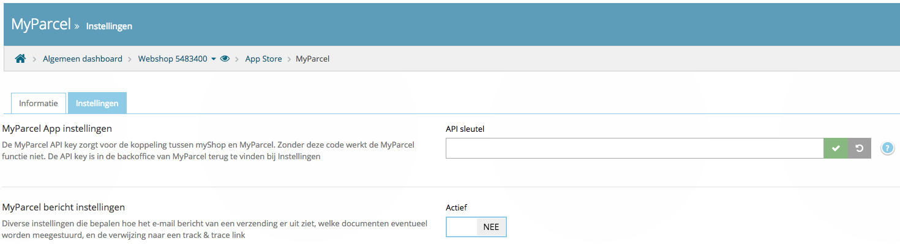
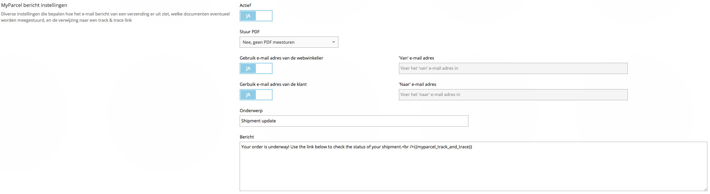
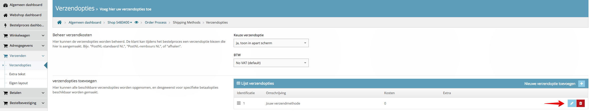
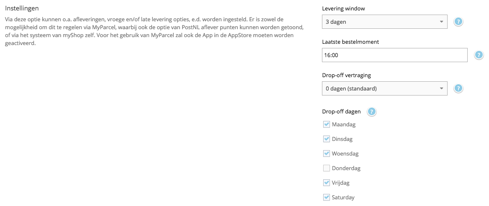
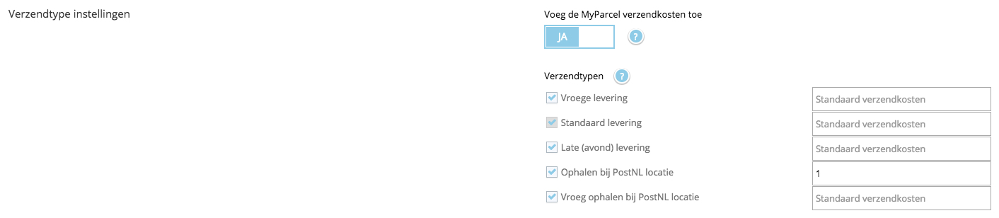
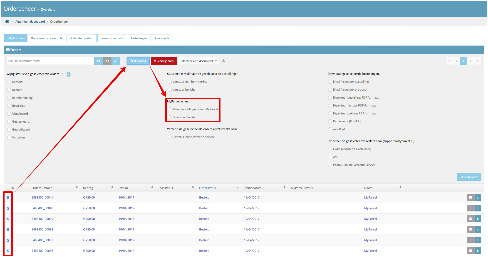
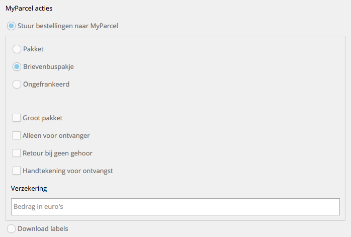
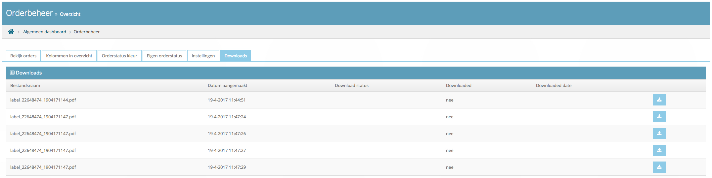

Instructie myShop plug-in
In deze handleiding wordt uitgelegd hoe je de myShop koppeling met MyParcel kunt installeren en hoe deze koppeling werkt.
In de myShop AppStore kun je de MyParcel app vinden. Je kunt hier kiezen voor Instellen om vervolgens de optie Geactiveerd op 'Ja' te kunnen zetten. De app wordt aangeboden door MyParcel, deze is kosteloos. Om gebruik te kunnen maken van de app dien je klant te zijn bij MyParcel. Wanneer je nog geen klant bent, kunt je vrijblijvend registreren via de volgende link: www.myparcel.nl/registreren.
Inhoud
1 Instructie myShop plugin
1.1 Het activeren van de plugin
Het is belangrijk dat je eerst de basisinstellingen van de MyParcel-plugin configureert. Nadat je de plugin hebt geactiveerd, kom je op de volgende configuratiepagina:

- Bij API sleutel kun je de API key invullen. Je kunt deze bij MyParcel aanvragen via info@myparcel.nl of onder Instellingen → Algemeen in MyParcel.
-
Daarnaast heb je ook de mogelijkheid om Track&Trace mails vanuit myShop te versturen. Activeer MyParcel bericht instellingen om van deze functie gebruik te maken.

Na het activeren, heb je de mogelijkheid om de gehele Track&Trace mail naar wens aan te passen
-
Stuur PDF
Bij deze optie heb je de mogelijkheid om samen met de Track&Trace mail ook een PDF van de bestelbevestiging, factuur of pakbon mee te sturen. -
Gebruik e-mail adres van de webwinkelier
Wil je dat de Track&Trace mail van een ander mailadres wordt verstuurd dan in myShop bekend is? Zet deze optie dan op 'nee' en vul vervolgens een ander mailadres in. -
Gebruik e-mail adres van de klant
Wil je dat de Track&Trace mail niet standaard naar jouw klant wordt verstuurd? Zet deze optie dan op 'nee' en vul vervolgens een ander mailadres in. -
Onderwerp en inhoud Track&Trace mail
Pas hier de gehele inhoud van de Track&Trace mail naar wens aan, zodat deze helemaal bij jouw webwinkel past. Maak gebruik van de code {{myparcel_track_and_trace}} om de door jou gegenereerde barcode direct in de mail te laten verschijnen.
-
Stuur PDF
De Track&Trace mail zal vanuit myShop worden verstuurd wanneer de barcode door MyParcel is teruggekoppeld. Dit zal gebeuren zodra de zending is voorgemeld.
1.2 Het toevoegen van de MyParcel verzendopties
Let op! De MyParcel verzendopties kunnen maar aan één verzendmethode gekoppeld worden.
Ga in jouw myShop webshop-dashboard naar Verzenden → Verzendopties. Op deze pagina heb je de mogelijkheid om jouw verzendmethode(n) in te stellen. Maak een nieuwe verzendmethode aan of open een methode die je al eerder hebt ingesteld.

Om de MyParcel verzendopties aan jouw verzendmethode toe te voegen, ga je naar Afleverdatum en locatie. Kies vervolgens bij de optie 'Gebruik afleverdagen' voor 'Gebruik MyParcel'.
Bij 'Instellingen' heb je de mogelijkheid om de algemene instellingen omtrent de afleverdagen naar wens aan te passen.

-
Levering window
Met deze optie kun je aangeven tot hoever in de toekomst jouw klanten een leverdag kunnen kiezen. Je hebt de mogelijkheid om 1 tot 14 dagen te selecteren. -
Laatste bestelmoment
Hier kun je aangeven tot welk moment van de dag de orders nog verwerkt kunnen worden. Als je elke dag rond 17:00 de bestellingen naar een PostNL locatie brengt is het handig om de laatste order rond 16:00 te verwerken. Wanneer jouw klanten na dit tijdstip een bestelling plaatsen zien zij een latere levermogelijkheid. Bijvoorbeeld: Het laatste bestelmoment is om 16:00 en je kunt dezelfde dag de orders verwerken en op tijd inleveren, dan zal jouw klant als eerste levermogelijkheid voor 16:00 de volgende dag zien. Wanneer jouw klant na 16:00 besteld zal het de dag erna zijn. -
Drop-off vertraging
Je kunt hier instellen hoeveel dagen jij nodig hebt om een order, die vóór jouw laatste besteltijd binnenkomt, te verwerken. Als je bijvoorbeeld 1 dag invult, zal er in de weergave in de check-out altijd rekening gehouden worden met het feit dat jij de pakketten morgen niet kunt laten leveren. Bijvoorbeeld: De bestelling wordt geplaatst op 16 juni voordat jij naar het PostNL punt gaat. Je hebt echter een verwerkingstijd van 1 dag ingesteld, dus de eerste mogelijkheid voor jou om het pakket in te leveren is dan 17 juni. Jouw klant krijgt dan dus pas 18 juni als eerst mogelijke leverdag te zien. -
Drop-off dagen
Hiermee kun je aangeven op welke dagen jij het pakket afgeeft bij een PostNL locatie. Jouw klanten krijgen hiermee de juiste beschikbare bezorgdagen aangeboden.
Bij 'Verzendtype instellingen' kun je de verschillende beschikbare verzendoptie (de)activeren. Zet de optie Voeg de MyParcel verzendkosten toe op 'Ja' als je extra kosten aan jouw klanten wilt doorberekenen. Als je geen zelfgekozen kosten invult, zullen de standaard toeslagen van MyParcel doorberekend worden. Alle tarieven zijn ook in jouw MyParcel account terug te vinden via Tarieven.

1.3 Het aanmaken van de labels
Het is mogelijk om via Orderbeheer één of meerdere zendingen in een keer te exporteren. Selecteer de orders waar een verzendlabel van gemaakt moet worden en klik daarna op 'Kies actie'. In het midden van het uitgeklapte menu is de optie 'MyParcel acties' zichtbaar. Vervolgens heb je de mogelijkheid om te kiezen voor Stuur bestellingen naar MyParcel of Download labels. De optie 'Download labels' kan enkel gebruikt worden bij orders die al geëxporteerd zijn.

Wanneer je de optie 'Stuur bestellingen naar MyParcel' gebruikt, zal je het onderstaande scherm te zien krijgen. Je krijgt de keuze om een pakket, brievenbuspakje of ongefrankeerd label te exporteren. Wanneer je een pakket selecteert, krijg je ook de mogelijkheid om extra verzendopties toe te voegen. De extra kosten voor deze opties zijn in jouw MyParcel account terug te vinden via Tarieven.

Na het gebruiken van de optie 'Download labels' kunnen de verzendlabels gedownload worden via het tabje Downloads.

2 Hulp nodig?
Indien je vragen hebt over de installatie of het gebruik van de plug-in, helpen wij je graag. Ook tips & suggesties voor verbetering van de (werking) van de plug-in, horen wij graag. Mail support@myparcel.nl of bel: 023 30 30 315.